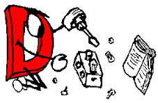

Hackathon Afternoon Session

Everybody
May 11 @ 13:30
Duration: 4 hours
Talk type: Hackathon
Level: All
Abstract:
The fourth day of DConf 2019 is set aside for our 3rd annual Hackathon! Collaborate with fellow D hackers to make the D community a better place.
Description
The first DConf Hackathon resulted in, to quote Walter Bright, "A tsunami of pull requests". That cemented its place as part of the DConf tradition. The 2018 edition of the Hackathon saw coders from Ubisoft tutoring some folks on game development in D, a clinical bioinformatician organizing programmers interested in contributing to projects for genomic bioinformatics, and keyboards banging on & birds-of-a-feather discussions about a variety of issues from the D ecosystem.
This year, just as we did in Munich, we're opening the Hackathon doors to the general public. If you're in the area, we invite you to join us. Learn more about D, help some D coders hack on a project, partake in some interesting conversations, or just drop in and say hi! We'll even provide lunch and snacks for our guests as we can. Availability for the food will be limited, though, so it's a first-come-first-serve sort of thing. If you do join us in the morning, be sure to have a backup plan for lunch just in case.
In 2018, we kicked off the Hackathon day with one more talk. This year, we're starting it with an Annual General Meeting to hash out longstanding issues and set the stage for the Hackathon. The morning Hackathon session will begin immediately following the AGM, the afternoon session immediately after lunch.
We encourage all attendees interested in D's future to stick around until May 11 for the AGM and the Hackathon!